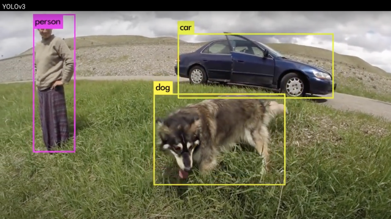
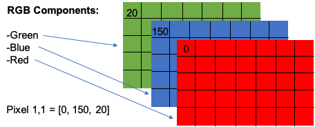
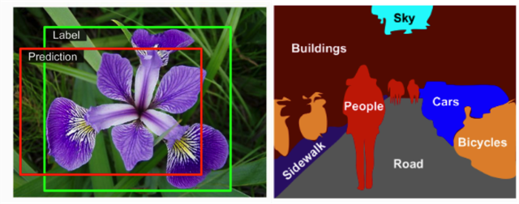
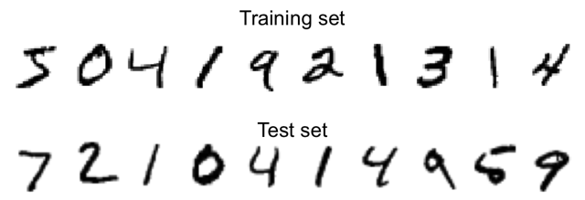
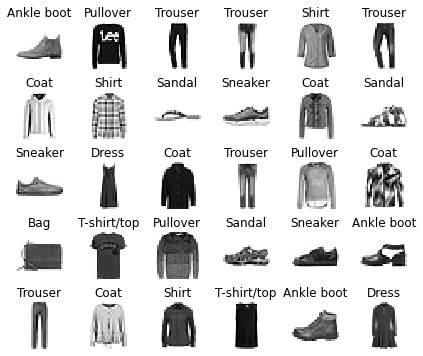

14.Multimedia data
- Learn how to transform multimedia data into useful inputs for computational analysis
- Understand how to conduct deep learning to automatic classification of images
!pip3 install Pillow requests numpy sklearn!pip3 install tensorflow keras
install.packages(c("magick", "glue","lsa","tidyverse","dslabs","randomForest","caret","tensorflow","keras"))
import matplotlib.pyplot as pltfrom PIL import Imageimport requestsimport numpy as npimport sklearnfrom sklearn.datasets import fetch_openmlfrom sklearn.metrics.pairwise import (cosine_similarity)from sklearn.ensemble import (RandomForestClassifier)from sklearn.metrics import accuracy_scoreimport tensorflow as tfimport kerasfrom keras.applications import resnet50
library(magick)library(lsa)library(tidyverse)library(dslabs)library(randomForest)library(caret)library(tensorflow)library(keras)
14.1.Beyond Text Analysis: Images, Audio and Video
A book about the computational analysis of communication would be incomplete without a chapter dedicated to analyzing visual data. In fact, if you think of the possible contents derived from social, cultural and political dynamics in the current digital landscape, you will realize that written content is only a limited slice of the bigger cake. Humans produce much more oral content than text messages, and are more agile in deciphering sounds and visual content. Digitalization of social and political life, as well as the explosion of self-generated digital content in the web and social media, have provoked an unprecedented amount of multimedia content that deserve to be included in many types of research.
Just imagine a collection of digital recorded radio stations, or the enormous amount of pictures produced every day on Instagram, or even the millions of videos of social interest uploaded on Youtube. These are definitely goldmines for social researchers who traditionally used manual techniques to analyze just a very small portion of this multimedia content. However, it is also true that computational techniques to analyze audio, images or video are still little developed in social sciences given the difficulty of application for non-computational practitioners and the novelty of the discoveries in fields such as computer vision.
This section gives a brief overview of different formats of multimedia files. We explain how to generate useful inputs into our pipeline to perform computational analysis.
You are probably already familiar with digital formats of images (.jpg, .bmp, .gif, etc.), audio (.mp3, .wav, .wma, flac, etc.) or video (.avi, .mov, .wmv, .flv, etc.), which is the very first step to use these contents as input. However, similar to the case of texts you will need to do some preprocessing to put these formats into good shape and get a proper mathematical representation of the content.
In the case of audio, there are many useful computational approaches to do research over these contents: from voice recognition, audio sentiment analysis or sound classification, to automatic generation of music. Recent advances in the field of artificial intelligence have created a prosperous and diversified field with multiple academic and commercial applications. Nevertheless, computational social scientists can obtain great insights just by using specific applications such as speech-to-text transformation and then apply text analytics (already explained in chapters 9, 10, and 11) to the results. As you will see in Section 14.2, there are some useful libraries in R and Python to use pre-trained models to transcribe voice in different languages.
Even when this approach is quite limited (just a small portion of the audio analytics world) and constrained (we will not address how to create the models), it will show how a specific, simple and powerful application of the automatic analysis of audio inputs can help answering many social questions (e.g., what are the topics of a natural conversation, what are the sentiments expressed in the scripts of radio news pieces, or which actors are named in oral speeches of any political party). In fact, automated analysis of audio can enable new research questions, different from those typically applied to text analysis. This is the case of the research by Knox and Lucas (2021), who used a computational approach over audio data from the Supreme Court Oral Arguments (407 arguments and 153 hours of audio, comprising over 66000 justice utterances and 44 million moments) to demonstrate that some crucial information such as the skepticism of legal arguments was transmitted by vocal delivery (e.g., speech tone), something indecipherable to text analysis. Or we could also mention the work by Dietrich et al. (2019) who computationally analyzed the vocal pitch of more than 70000 Congressional floor audio speeches and found that female members of the Congress spoke with greater emotional intensity when talking about women.
On the other hand, applying computational methods to video input is probably the most challenging task in spite of the recent and promising advances in computer vision. For the sake of space, we will not cover specific video analytics in this chapter, but it is important to let you know that most of the computational analysis of video is based on the inspection of image and audio contents. With this standard approach you need to specify which key frames you are going to extract from the video (for example take a still image every 1000 frames) and then apply computer vision techniques (such as object detection) to those independent images. Check for example version 3 of the object detection architecture You Only Look Once Take (YOLOv3)[1] created by Redmon and Farhadi (2018), which uses a pre-trained Convolutional Neural Network (CNN) (see Section 14.4) to locate objects within the video (Figure 14.1). To answer many social science questions you might complement this frame-to-frame image analysis with an analysis of audio features. In any case, this approach will not cover some interesting aspects of the video such as the camera frame shots and movements, or the editing techniques, which certainly give more content information.
Figure 14.1.
A screen shot of a real-time video analyzed by YOLOv3 on its website https://pjreddie.com/darknet/yolo/

{kind=link}
14.2.Using Existing Libraries and APIs
In the following sections we will show you how to deal with multimedia contents from scratch, with special attention to image classification using state-of-the-art libraries. However, it might be a good idea to begin by using existing libraries that directly implement multimedia analyses or by connecting to commercial services to deploy classification tasks remotely using their APIs. There is a vast variety of available libraries and APIs, which we cannot cover in this book, but we will briefly mention some of them that may be useful in the computational analysis of communication.
One example in the field of visual analytics is the optical character recognition (OCR). It is true that you can train your own models to deploy multi-class classification and predict every letter, number or symbol in an image, but it will be a task that will take you a lot of effort. Instead, there are specialized libraries in both R and Python such as tesseract that deploy this task in seconds with high accuracy. It is still possible that you will have to apply some pre-processing to the input images in order to get them in good shape. This means that you may need to use packages such as PIL or Magick to improve the quality of the image by cropping it or by reducing the background noise. In the case of PDF files you will have to convert them first into images and then apply OCR.
In the case of more complex audio and image documents you can use more sophisticated services provided by private companies (e.g., Google, Amazon, Microsoft, etc.). These commercial services have already deployed their own machine learning models with very good results. Sometimes you can even customize some of their models, but as a rule their internal features and configuration are not transparent to the user. Moreover, these services offer friendly APIs and, usually, a free quota to deploy your first exercises.
To work with audio files, many social researchers might need to convert long conversations, radio programs, or interviews to plain text. For this propose, Google Cloud offer the service Speech-to-Text[2] that remotely transcribes the audio to a text format supporting multiple languages (more than 125!). With this service you can remotely use the advanced deep learning models created by Google Platform from your own local computer (you must have an account and connect with the proper packages such as googleLanguageR or google-cloud-language in Python).
If you apply either OCR to images or Speech-to-Text recognition to audio content you will have juicy plain text to conduct NLP, sentiment analysis, topic modelling, among other techniques (see Chapter 11). Thus, it is very likely that you will have to combine different libraries and services to perform a complete computational pipeline, even jumping from R to Python, and vice versa!
Finally, we would like to mention the existence of the commercial services of autotaggers, such as Google's Cloud Vision, Microsoft's Computer Vision or Amazon's Recognition. For example, if you connect to the services of Amazon's Recognition you can not only detect and classify images, but also conduct sentiment analysis over faces or predict sensitive contents within the images. As in the case of Google Cloud, you will have to obtain commercially sold credentials to be able to connect to Amazon's Recognition API (although you get a free initial “quota” of API access calls before you are required to pay for usage). This approach has two main advantages. The first is the access to a very well trained and validated model (continuously re-trained) over millions of images and with the participation of thousands of coders. The second is the scalability because you can store and analyze images at scale at a very good speed using cloud computing services.
Figure 14.2.
A photograph of refugees on a lifeboat, used as an input for Amazon's Recognition API. The commercial service detects in the pictures classes such as clothing, apparel, human, person, life jacket or vest.
{kind=link}
As an example, you can use Amazon's Recognition to detect objects in a news photograph of refugees in a lifeboat (Figure 14.2) and you will obtain a set of accurate labels: Clothing (99.95%), Apparel (99.95%), Human (99.70%), Person (99.70%), Life jacket (99.43%) and Vest (99.43%). With a lower confidence you will also find labels such as Coat (67.39%) and People (66.78%). This example also highlights the need for validation, and the difficulty of grasping complex concepts in automated analyses: while all of these labels are arguably correct, it is safe to say that they fail to actually grasp the essence of the picture and the social context. One may even go as far as saying that – knowing the picture is about refugees – some of these labels, were they given by a human to describe the picture, would sound pretty cynical.
In Section 14.4 we will use this very same image (stored as myimg2_RGB) to detect objects using a classification model trained with an open-access database of images (ImageNet). You will find that there are some different predictions in both methods, but especially that the time to conduct the classification is shorter in the commercial service, since we don't have to train or choose a model. As you may imagine, you can neither modify the commercial models nor have access to their internal details, which is a strong limitation if you want to build your own customized classification system.
14.3.Storing, Representing, and Converting Images
In this section we will focus on learning how to store, represent, and convert images for further computational analysis. For a more exhaustive discussion of the computational analysis of images, see Williams et al. (2020).
To perform basic image manipulation we have to: (i) load images and transform their shape when it is necessary (by cropping or resizing), and (ii) create a mathematical representation of the image (normally derived from its size, colors and pixel intensity) such as a three-dimensional matrix (x, y, color channel) or a flattened vector. You have some useful libraries in Python and R (pil and imagemagik, respectively) to conduct research in these initial stages, but you will also find that more advanced libraries in computer vision will include functions or modules for pre-processing images. At this point you can work either locally or remotely, but keep in mind that images can be heavy files and if you are working with thousands of files you will probably need to store or process them in the cloud (see Section 15.2).
You can load any image as an object into your workspace as we show in Example 14.1. In this case we load two pictures of refugees published by mainstream media in Europe (see Amores et al. (2019)), one is a JPG and the other is a PNG file. For this basic loading step we used the open function of the Image module in pil and image_read function in imagemagik. The JPG image file is a \(805\times 453\) picture with the color model RGB and the PNG is a \(1540\times 978\) picture with the color model RGBA. As you may notice the two objects have different formats, sizes and color models, which means that there is little analysis you can do if you don't create a standard mathematical representation of both.
Example 14.1.
Loading JPG and PNG pictures as objects
myimg1 = Image.open(requests.get("https://cssbook.net/d/259_3_32_15.jpg",stream=True).raw)myimg2 = Image.open(requests.get("https://cssbook.net/d/298_5_52_15.png",stream=True).raw)print(myimg1)print(myimg2)
myimg1 = image_read("https://cssbook.net/d/259_3_32_15.jpg")myimg2 = image_read("https://cssbook.net/d/298_5_52_15.png")rbind(image_info(myimg1), image_info(myimg2))
<PIL.JpegImagePlugin.JpegImageFile image mode=RGB size=805x453 at 0x7F2650CA9130> <PIL.PngImagePlugin.PngImageFile image mode=RGBA size=1540x978 at 0x7F2616F839D0>
format width height colorspace matte filesize density 1 JPEG 805 453 sRGB FALSE 75275 72x72 2 PNG 1540 978 sRGB TRUE 2752059 57x57
Figure 14.3.
Representation of the matrix data structure of a RGB image in which each pixel contains information for the intensity of each color component.

The good news when working with digital images is that the concept of pixel (picture element) will help you to understand the basic mathematical representation behind computational analysis of images. A rectangular grid of pixels is represented by a dot matrix which in turn generates a bitmap image or raster graphic. The dot matrix data structure is a basic but powerful representation of the images since we can conduct multiple simple and advanced operations with the matrices. Specifically, each dot in the matrix is a number that contains information about the intensity of each pixel (that commonly ranges from 0 to 255) also known as bit or color depth (figure 14.3). This means that the numerical representation of a pixel can have 256 different values, 0 being the darkest tone of a given color and 255 the lightest. Keep in mind that if you divide the pixel values by 255 you will have a 0–1 scale to represent the intensity.
In a black-and-white picture we will only have one color (gray-scale), with the darker points representing the black and the lighter ones the white. The mathematical representation will be a single matrix or a two-dimensional array in which the number of rows and columns will correspond to the dimensions of the image. For instance in a \(224 \times 224\) black-and-white picture we will have 50176 integers (0–255 scales) representing each pixel intensity.
In Example 14.2 we convert our original JPG picture to gray-scale and then create an object with the mathematical representation (a \(453 \times 805\) matrix).
Example 14.2.
Converting images to gray-scale and creating a two-dimensional array
myimg1_L = myimg1.convert("L")print(type(myimg1_L))myimg1_L_array = np.array(myimg1_L)print(type(myimg1_L_array))print(myimg1_L_array.shape)
myimg1_L = image_convert(myimg1,colorspace = "gray")print(class(myimg1_L))myimg1_L_array = as.integer(myimg1_L[[1]])print(class(myimg1_L_array))print(dim(myimg1_L_array))
<class 'PIL.Image.Image'> <class 'numpy.ndarray'> (453, 805)
[1] "magick-image" [1] "array" [1] 453 805 1
By contrast, color images will have multiple color channels that depend on the color model you chose. One standard color model is the three-channel RGB (red, green and blue), but you can find other variations in the chosen colors and the number of channels such as: RYB (red, yellow and blue), RGBA (red, green, blue and alpha[3] ) or CMYK (cyan, magenta, yellow and key[4]). Importantly, while schemes used for printing such as CMYK are substractive (setting all colors to their highest value results in black, setting them to their lowest value results in white), schemes used for computer and television screens (such as RGB) are additive: setting all of the colors to their maximal value results in white (pretty much the opposite as what you got with your paintbox in primary school).
We will mostly use RGB in this book since it is the most used representation in the state-of-the-art literature in computer vision given that normally these color channels yield more accurate models. RGB's mathematical representation will be a three-dimensional matrix or a collection of three two-dimensional arrays (one for each color) as we showed in figure 14.3. Then an RGB \(224 \times 224\) picture will have 50176 pixel intensities for each of the three colors, or in other words a total of 150528 integers!
Now, in Example 14.3 we convert our original JPG file to a RGB object and then create a new object with the mathematical representation (a \(453 \times 805 \times 3\) matrix).
Example 14.3.
Converting images to RGB color model and creating three two-dimensional arrays
myimg1_RGB = myimg1.convert("RGB")print(type(myimg1_RGB))myimg1_RGB_array = np.array(myimg1_RGB)print(type(myimg1_RGB_array))print(myimg1_RGB_array.shape)
myimg1_RGB = image_convert(myimg1,colorspace = "RGB")print(class(myimg1_RGB))myimg1_RGB_array = as.integer(myimg1_RGB[[1]])print(class(myimg1_RGB_array))print(dim(myimg1_RGB_array))
<class 'PIL.Image.Image'> <class 'numpy.ndarray'> (453, 805, 3)
[1] "magick-image" [1] "array" [1] 453 805 3
Instead of pixels, there are other ways to store digital images. One of them is the vector graphics, with formats such as .ai, .eps, .svg or .drw. Differently to bitmap images, they don't have a grid of dots but a set of paths (lines, triangles, square, curvy shapes, etc.) that have a start and end point, so simple and complex images are created with paths. The great advantage of this format is that images do not get “pixelated” when you enlarge them because the paths can easily be transformed while remaining smooth. However, to obtain the standard mathematical representation of images you can convert the vector graphics to raster graphics (the way back is a bit more difficult and often only possible by approximation).
Sometimes you need to convert your image to a specific size. For example, in the case of image classification this is a very important step since all the input images of the model must have the same size. For this reason, one of the most common tasks in the preprocessing stage is to change the dimensions of the image in order to adjust width and height to a specific size. In Example 14.4 we use the resize method provided by pil and the image_scale function in imagemagik to reduce the first of our original pictures in RGB (myimg1_RGB) to 25% . Notice that we first obtain the original dimensions of the photograph
(i.e. myimg1_RGB.width or image_info(myimg1_RGB)['width'][[1]]) and then multiply it by 0.25 in order to obtain the new size which is the argument required by the functions.
Example 14.4.
Resize to 25% and visualize a picture
#Resize and visalize myimg1. Reduce to 25%myimg1_RGB_25 = myimg1_RGB.resize((int(myimg1_RGB.width * 0.25),int(myimg1_RGB.height * 0.25)))myimg1_RGB_25
#Resize and visalize myimg1. Reduce to 25%myimg1_RGB_25 = image_scale(myimg1_RGB,image_info(myimg1_RGB)["width"][[1]]*0.25)plot(myimg1_RGB_25)
{kind=link}
Now, using the same functions of the latter example, we specify in Example 14.5 how to resize the same picture to \(224 \times 244\), which is one of the standard dimensions in computer vision.
Example 14.5.
Resize to \(224 \times 224\) and visualize a picture
#Resize to 224 x 224myimg1_RGB_224 = myimg1_RGB.resize((224,224))myimg1_RGB_224
#Resize and visalize myimg1. Resize to 224 x 224#! indicates to resize width and height exactlymyimg1_RGB_224 = image_scale(myimg1_RGB,"!224x!224")plot(myimg1_RGB_224)
{kind=link}
You may have noticed that the new image has now the correct width and height but that it looks deformed. The reason is that the original picture was not squared and our order was to force it to fit into a \(224 \times 224\) square, losing its original aspect. There are different alternatives to solving this issue, but probably the most extended is to crop the original image to create a squared picture. As you can see in Example 14.6 we can create a function that first determines the orientation of the picture (vertical versus horizontal) and then cut the margins (up and down if it is vertical; and left and right if it is horizontal) to create a square. After applying this ad hoc function crop to the original image we can resize again to obtain a non-distorted \(224 \times 224\) image.
Of course you are now losing part of the picture information, so you may think of other alternatives such as filling a couple of sides with blank pixels (or padding) in order to create the square by adding information instead of removing it.
Example 14.6.
Function to crop the image to create a square and the resize the picture
#Crop and resize to 224 x 224#Adapted from Webb, Casas & Wilkerson (2020)def crop(img):height = img.heightwidth = img.widthhw_dif = abs(height - width)hw_halfdif = hw_dif / 2crop_leftright = width > heightif crop_leftright:y0 = 0y1 = heightx0 = 0 + hw_halfdifx1 = width - hw_halfdifelse:y0 = 0 + hw_halfdify1 = height - hw_halfdifx0 = 0x1 = widthreturn img.crop((x0, y0, x1, y1))myimg1_RGB_crop = crop(myimg1_RGB)myimg1_RGB_crop_224 = myimg1_RGB_crop.resize((224,224))myimg1_RGB_crop_224
#Crop and resize to 224 x 224#Create functioncrop = function(img) {width = image_info(img)["width"][[1]]height = image_info(img)["height"][[1]]if (width > height) {return (image_crop(img,sprintf("%dx%d+%d", height,height, (width-height)/2)))} else {return (image_crop(img,sprintf("%sx%s+%s+%s", width,width, (width-width), (height-width)/2)))}}myimg1_RGB_crop = crop(myimg1_RGB)myimg1_RGB_crop_224 = image_scale(myimg1_RGB_crop,"!224x!224")plot(myimg1_RGB_crop_224)
{kind=link}
You can also adjust the orientation of the image, flip it, or change its background, among other commands. These techniques might be useful for creating extra images in order to enlarge the training set in image classification (see Section 14.4). This is called data augmentation and consists of duplicating the initial examples on which the model was trained and altering them so that the algorithm can be more robust and generalize better. In Example 14.7 we used the rotate method in pil and image_rotate function in imagemagik
to rotate 45 degrees the above resized image myimg1_RGB_224 to see how easily we can get an alternative picture with similar information to include in an augmented training set.
Example 14.7.
Rotating a picture 45 degrees
#Rotate 45 degreesmyimg1_RGB_224_rot=myimg1_RGB_224.rotate(-45)myimg1_RGB_224_rot
#Rotate 45 degreesmyimg1_RGB_224_rot = image_rotate(myimg1_RGB_224, 45)plot(myimg1_RGB_224_rot)
{kind=link}
Finally, the numerical representation of visual content can help us to compare pictures in order to find similar or even duplicate images. Let's take the case of RGB images which in Example 14.3 we showed how to transform to a three two-dimensional array. If we now convert the three-dimensional matrix of the image into a flattened vector we can use this simpler numerical representation to estimate similarities. Specifically, as we do in Example 14.8, we can take the vectors of two flattened images of resized \(15 \times 15\) images to ease computation (img_vect1 and img_vect2) and use the cosine similarity to estimate how akin those images are. We stacked the two vectors in a matrix and then used the cosine_similarity function of the metrics module of the sklearn package in Python and the cosine function of the lsa package in R.
Example 14.8.
Comparing two flattened vectors to detect similarities between images
#Create two 15x15 small images to compare#image1myimg1_RGB_crop_15 = myimg1_RGB_crop_224.resize((15,15))#image2myimg2_RGB = myimg2.convert("RGB")myimg2_RGB_array = np.array(myimg2_RGB)myimg2_RGB_crop = crop(myimg2_RGB)myimg2_RGB_crop_224 = myimg2_RGB_crop.resize((224,224))myimg2_RGB_crop_15 = myimg2_RGB_crop_224.resize((15,15))img_vect1 = np.array(myimg1_RGB_crop_15).flatten()img_vect2 = np.array(myimg2_RGB_crop_15).flatten()matrix = np.row_stack((img_vect1, img_vect2))sim_mat = cosine_similarity(matrix)sim_mat
#Create two 15x15 small images to compare#image1myimg1_RGB_crop_15 = image_scale(myimg1_RGB_crop_224, 15)img_vect1 = as.integer(myimg1_RGB_crop_15[[1]])img_vect1 = as.vector(img_vect1)#image2myimg2_RGB = image_convert(myimg2,colorspace = "RGB")myimg2_RGB_crop = crop(myimg2_RGB)myimg2_RGB_crop_15 = image_scale(myimg2_RGB_crop, 15)img_vect2 = as.integer(myimg2_RGB_crop_15[[1]])#drop the extra channel for comparisionimg_vect2 = img_vect2[,,-4]img_vect2 = as.vector(img_vect2)matrix = cbind(img_vect1, img_vect2)cosine(img_vect1, img_vect2)cosine(matrix)
array([[1. , 0.86462734],
[0.86462734, 1. ]])
[,1]
[1,] 0.8987007
img_vect1 img_vect2
img_vect1 1.0000000 0.8987007
img_vect2 0.8987007 1.0000000
As you can see in the resulting matrix when the images are compared with themselves (that would be the case of an exact duplicate) they obtain a value of 1. Similar images would obtain values under 1 but still close to it, while dissimilar images would obtain low values.
14.4.Image Classification
The implementation of computational image classification can help to answer many scientific questions, from testing some traditional hypotheses to opening new fields of interest in social science research. Just think about the potential of detecting at scale who appears in news photographs or what are the facial emotions expressed in the profiles of a social network. Moreover, imagine you can automatically label whether an image contains a certain action or not. For example, this is the case of Williams et al. (2020) who conducted a binary classification of pictures related to the Black Lives Matter movement in order to model if a picture was a protest or not, which can help to understand the extent to which the media covered a relevant social and political issue.
There are many other excellent examples of how you can adopt image classification tasks to answer specific research questions in social sciences such as those of Horiuchi et al. (2012) who detected smiles in images of politicians to estimate the effects of facial appearance on election outcomes; or the work by Peng (2018) who used automated recognition of facial traits in American politicians to investigating the bias of media portrayals.
In this section, we will learn how to conduct computational image classification which is probably the most extended computer vision application in communication and social sciences (see Table 14.1 for some terminology). We will first discuss how to apply a shallow algorithm and then a deep-learning approach, given a labelled data set.
Table 14.1.
Some computer vision concepts used in computational analysis of communication
| Computer vision lingo | Definition |
|---|---|
| bitmap | Format to store digital images using a rectangular grid of points of colors. Also called “raster image”. |
| pixel | Stands for “picture element” and is the smallest point of a bitmap image |
| color model | Mathematical representation of colors in a picture. The standard in computer vision is RGB, but there are others such as RYB, RGBA or CMYK. |
| vector graphic | Format to store digital images using lines and curves formed by points. |
| data augmentation | Technique to increase the training set of images by creating new ones base on the modification of some of the originals (cropping, rotating, etc.) |
| image classification | Machine learning task to predict a class of an image based on a model. State-of-the-art image classification is conducted with Convolutional Neural Networks (CNN). Related tasks are object detection and image segmentation. |
| activation function | Parameter of a CNN that defines the output of a layer given the inputs of the previous layer. Some usual activation functions in image classification are sigmoid, softmax, or RELU. |
| loss function | Parameter of a CNN which accounts for the difference between the prediction and the target variable (confidence in the prediction). A common one in image classification is the cross entropy loss. |
| optimization | Parameter of a CNN that updates weights and biases in order to reduce the error. Some common optimizers in image classification are Stochastic Gradient Descent and ADAM. |
| transfer learning | Using trained layers of other CNN architectures to fine tune a new model investing less resources (e.g. training data). |
Technically, in an image classification task we train a model with examples (e.g., a corpus of pictures with labels) in order to predict the category of any given new sample. It is the same logic used in supervised text classification explained in Section 11.4 but using images instead of texts. For example, if we show many pictures of cats and houses the algorithm would learn the constant features in each and will tell you with some degree of confidence if a new picture contains either a cat or a house. It is the same with letters, numbers, objects or faces, and you can apply either binary or multi-class classification. Just think when your vehicle registration plate is recognized by a camera or when your face is automatically labelled in pictures posted on Facebook.
Beyond image classification we have other specific tasks in computer vision such as object detection or semantic segmentation (Figure 14.4). To conduct object detection we first have to locate all the possible objects contained in a picture by predicting a bounding box (i.e., the four points corresponding to the vertical and horizontal coordinates of the center of the object), which is normally a regression task. Once the bounding boxes are placed around the objects, we must apply multi-class classification as explained earlier. In the case of semantic segmentation, instead of classifying objects, we classify each pixel of the image according to the class of the object the pixel belongs to, which means that different objects of the same class might not be distinguished. See Géron (2019) for a more detailed explanation and graphical examples of object detection versus image segmentation.
Figure 14.4.
Object detection (left) versus semantic segmentation (right).
Source: Géron (2019)

{kind=link}
It is beyond the scope of this book to address the implementation of object detection or semantic segmentation, but we will focus on how to conduct basic image classification in state-of-the-art libraries in R and Python. As you may have imagined we will need some already-labelled images to have a proper training set. It is also out of the scope of this chapter to collect and annotate the images, which is the reason why we will mostly rely on pre-existing image databases (i.e., MINST or Fashion MINST) and pre-trained models (i.e., CNN architectures).
14.4.1.Basic Classification with Shallow Algorithms
In Chapter 8 we introduced you to the exciting world of machine learning and in Section 11.4 we introduced the supervised approach to classify texts. Most of the discussed models used so-called shallow algorithms such as Naïve Bayes or Support Vector Machines rather than the various large neural network models called deep learning. As we will see in the next section, deep neural networks are nowadays the best option for complex tasks in image classification. However, we will now explain how to conduct simple multi-class classification of images that contain numbers with a shallow algorithm.
Let us begin by training a model to recognize numbers using 70000 small images of digits handwritten from the Modified National Institute of Standards and Technology (MNIST) dataset (LeCun et al., 1998). This popular training corpus contains gray-scale examples of numbers written by American students and workers and it is usually employed to test machine learning models (60000 for training and 10000 for testing). The image sizes are \(28 \times 28\), which generates 784 features for each image, with pixels values from white to black represented by a 0–255 scales. In Figure 14.5 you can observe the first 10 handwritten numbers used in both training and test set.
Figure 14.5.
First 10 handwritten digits from the training and test set of the MNIST.

{kind=link}
You can download the MNIST images from its project web page[5], but many libraries also offer this dataset. In Example 14.9 we use the read_mnist function from the dslabs package (Data Science Labs) in R and the fetch_openml function from the sklearn package (datasets module) in Python to read and load a mnist object into our workspace. We then create the four necessary objects (X_train, X_test, y_train, y_test) to generate a ML model and print the first numbers in training and test sets and check they coincide with those in 14.5.
Example 14.9.
Loading MNIST dataset and preparing training and test sets
mnist = fetch_openml("mnist_784", version=1)X, y = mnist["data"], mnist["target"]y = y.astype(np.uint8)X_train, X_test = X[:60000], X[60000:]y_train, y_test = y[:60000], y[60000:]print("Shape = ", X.shape)print("Numbers in training set= ", y_train[0:10])print("Numbers in test set= ", y_test[0:10])
mnist = read_mnist()X_train = mnist$train$imagesy_train = factor(mnist$train$labels)X_test = mnist$test$imagesy_test = factor(mnist$test$labels)print("Shape = ")dim(mnist$train$images)print("Numbers in training set = ")print(factor(y_train[1:10]), max.levels = 0)print("Numbers in test set = ")print(factor(y_test[1:10]), max.levels = 0)
Shape = (70000, 784) Numbers in training set= [5 0 4 1 9 2 1 3 1 4] Numbers in test set= [7 2 1 0 4 1 4 9 5 9]
[1] "Shape = " [1] 60000 784 [1] "Numbers in training set = " [1] 5 0 4 1 9 2 1 3 1 4 [1] "Numbers in test set = " [1] 7 2 1 0 4 1 4 9 5 9
Once we are ready to model the numbers we choose one of the shallow algorithms explained in Section 8.3 to deploy a binary or multi-class image classification task. In the case of binary, we should select a number of reference (for instance “3”) and then create the model of that number against all the others (to answer questions such as “What's the probability of this digit of being number 3?”). On the other hand, if we choose multi-class classification our model can predict any of the ten numbers (0, 1, 2, 3, 4, 5, 6, 7, 8, 9) included in our examples.
Now, we used the basic concepts of the Random Forest algorithm (see section 8.3.4) to create and fit a model with 100 trees (forest_clf). In Example 14.10 we use again the randomForest package in R and sklearn package in Python to estimate a model for the ten classes using the corpus of 60000 images (classes were similarly balanced, \(\sim\)9–11% each). As we do in the examples, you can check the predictions for the first ten images of the test set (X_test), which correctly correspond to the right digits, and also check the (predictions) for the whole test set and then get some metrics of the model. The accuracy is over 0.97 which means the classification task is performed very well.
Example 14.10.
Modeling the handwritten digits with RandomForest and predicting some outcomes
forest_clf = RandomForestClassifier(n_estimators=100, random_state=42)forest_clf.fit(X_train, y_train)print(forest_clf)print("Predict the first 10 numbers of our set:",forest_clf.predict(X_test[:10]))predictions = forest_clf.predict(X_test)print("Overall Accuracy: ", accuracy_score(y_test, predictions))
#Multiclass classification with RandomForestrf_clf = randomForest(X_train, y_train, ntree=100)rf_clfpredict(rf_clf, X_test[1:10,])predictions = predict(rf_clf, X_test)cm = confusionMatrix(predictions, y_test)print(cm$overall["Accuracy"])
RandomForestClassifier(random_state=42) Predict the first 10 numbers of our set: [7 2 1 0 4 1 4 9 5 9] Overall Accuracy: 0.9705
Call:
randomForest(x = X_train, y = y_train, ntree = 100)
Type of random forest: classification
Number of trees: 100
No. of variables tried at each split: 28
OOB estimate of error rate: 3.47%
Confusion matrix:
0 1 2 3 4 5 6 7 8 9 class.error
0 5846 2 6 6 4 8 23 1 25 2 0.01300017
1 0 6630 35 14 13 9 4 12 13 12 0.01661228
2 29 9 5763 24 28 4 14 39 38 10 0.03272910
3 5 11 96 5807 4 62 5 55 60 26 0.05284619
4 8 12 12 2 5656 1 25 11 13 102 0.03183841
5 19 5 10 76 8 5189 42 7 36 29 0.04279653
6 25 10 7 1 12 39 5806 0 18 0 0.01892531
7 6 20 56 10 36 1 0 6058 13 65 0.03304070
8 12 26 39 56 33 54 33 7 5533 58 0.05434968
9 21 13 13 62 79 25 5 57 46 5628 0.05395865
1 2 3 4 5 6 7 8 9 10
7 2 1 0 4 1 4 9 5 9
Levels: 0 1 2 3 4 5 6 7 8 9
Accuracy
0.971
This approach based on shallow algorithms seems to work pretty well for simple images, but has a lot of limitations for more complex images such as figures or real pictures. After all, the more complex the image and the more abstract the concept, the less likely it is that one can expect a direct relationship between a pixel color and the classification. In the next section we introduce the use of deep learning in image classification which is nowadays a more accurate approach for complex tasks.
14.4.2.Deep Learning for Image Analysis
Even though they require heavy computations, Deep Neural Networks (DNN) are nowadays the best way to conduct image classification because their performance is normally higher than shallow algorithms. The reason is that we broaden the learning process using intermediate hidden layers, so each of these layers can learn different patterns or aspects of the image with different levels of abstraction: e.g., from detecting lines or contours in the first layers to catching higher feature representation of an image (such as the color of skin, the shapes of the eyes or the noses) in the next layers. In Section 8.3.5 and Section 11.4.4 we introduced the general concepts of a DNN (such as perceptrons, layers, hidden layers, back or forward propagation, and output functions), and now we will cover some common architectures for image analysis.
One of the simplest DNNs architectures is the Multilayer Perceptron (MLP) which contains one input layer, one or many hidden layers, and one output layer (all of them fully connected and with bias neurons except for the output layer). Originally in a MLP the signals propagate from the inputs to the outputs (in one direction), which we call a feedforward neural network (FNN), but using Gradient Decent as an optimizer we can apply backpropagation (automatically computing the gradients of the network's errors in two stages: one forward and one backward) and then obtain a more efficient training.
We can use MLPs for binary and multi-class classification. In the first case, we normally use a single output neuron with the sigmoid or logistic activation function (probability from 0 to 1) (see section ??); and in the second case we will need one output neuron per class with the softmax activation function (probabilities from 0 to 1 for each class but they must add up to 1 if the classes are exclusive. This is the function used in multinomial logistic regression). To predict probabilities, in both cases we will need a loss function and the one that is normally recommended is the cross entropy loss or simply log loss.
The state-of-the-art library for neural networks in general and for computer vision in particular is TensorFlow[6] (originally created by Google and later publicly released) and the high-level Deep Learning API Keras, although you can find other good implementation packages such as PyTorch (created by Facebook), which has many straightforward functionalities and has also become popular in recent years (see for example the image classification tasks for social sciences conducted in PyTorch by Williams et al. (2020)). All these packages have current versions for both R and Python.
Now, let's train an MLP to build an image classifier to recognize fashion items using the Fashion MNIST dataset[7]. This dataset contains 70000 (60000 for training and 10000 for test) gray scale examples (\(28\times 28\)) of ten different classes that include ankle boots, bags, coats, dresses, pullovers, sandals, shirts, sneakers, t-shirts/tops and trousers (Figure 14.6). If you compare this dataset with the MINST, you will find that figures of fashion items are more complex than handwritten digits, which normally generates a lower accuracy in supervised classification.
Figure 14.6.
Examples of Fashion MNIST items.

You can use Keras to load the Fashion MNIST. In Example 14.11 we load the complete dataset and create the necessary objects for modeling (X_train_full, y_train_full, X_test, y_test). In addition we rescaled all the input features from 0–255 to 0–1 by dividing them by 255 in order to apply Gradient Decent. Then, we obtained three sets with \(28\times 28\) arrays: 60000 in the training, and 10000 in the test. We could also generate here a validation set (e.g., X_valid and y_valid) with a given amount of records extracted from the training set (e.g., 5000), but as you will later see Keras allows us to automatically generate the validation set as a proportion of the training set (e.g., 0.1, which would be 6000 records in our example) when fitting the model (check the importance to work with a validation set to avoid over-fitting, explained in Section 8.5.2).
Example 14.11.
Loading Fashion MNIST dataset and preparing training, test and validation sets
fashion_mnist = keras.datasets.fashion_mnist(X_train, y_train), (X_test, y_test) = \fashion_mnist.load_data()class_names = ["T-shirt/top", "Trouser","Pullover", "Dress", "Coat","Sandal", "Shirt", "Sneaker","Bag", "Ankle boot"]X_train = X_train / 255.X_test = X_test / 255.print(X_train.shape, X_test.shape)
fashion_mnist <- dataset_fashion_mnist()c(X_train, y_train) %<-% fashion_mnist$trainc(X_test, y_test) %<-% fashion_mnist$testclass_names = c("T-shirt/top","Trouser","Pullover","Dress", "Coat", "Sandal","Shirt","Sneaker", "Bag","Ankle boot")X_train <- X_train / 255y_test <- y_test / 255print(dim(X_train))print(dim(X_test))
(60000, 28, 28) (10000, 28, 28)
[1] 60000 28 28 [1] 10000 28 28
The next step is to design the architecture of our model. There are three ways to create the models in Keras (sequential, functional, or subclassing), but there are thousands of ways to configure a deep neural network. In the case of this MLP, we have to include first an input layer with the input_shape equal to the image dimension (\(28\times 28\) for 784 neurons). At the top of the MLP you will need a output layer with 10 neurons (the number of possible outcomes in our multi-class classification task) and a softmax activation function for the final probabilities for each class.
In Example 14.12 we use the sequential model to design our MLP layer by layer including the above-mentioned input and output layers. In the middle, there are many options for the configuration of the hidden layers: number of layers, number of neurons, activation functions, etc. As we know that each hidden layer will help to model different patterns of the image, it would be fair to include at least two of them with different numbers of neurons (significantly reducing this number in the second one) and transmit its information using the relu activation function. What we actually do is create an object called model which saves the proposed architecture. We can use the method summary to obtain a clear representation of the created neural network and the number of parameters of the model (266610 in this case!).
Example 14.12.
Creating the architecture of the MLP with Keras
model = keras.models.Sequential([keras.layers.Flatten(input_shape=[28, 28]),keras.layers.Dense(300, activation="relu"),keras.layers.Dense(100, activation="relu"),keras.layers.Dense(10, activation="softmax")])model.summary()
model = keras_model_sequential()model %>%layer_flatten(input_shape = c(28, 28)) %>%layer_dense(units=300, activation="relu") %>%layer_dense(units=100, activation="relu") %>%layer_dense(units=10, activation="softmax")model
Model: "sequential" _________________________________________________________________ Layer (type) Output Shape Param # ================================================================= flatten (Flatten) (None, 784) 0 _________________________________________________________________ dense (Dense) (None, 300) 235500 _________________________________________________________________ dense_1 (Dense) (None, 100) 30100 _________________________________________________________________ dense_2 (Dense) (None, 10) 1010 ================================================================= Total params: 266,610 Trainable params: 266,610 Non-trainable params: 0 _________________________________________________________________
The next steps will be to compile, fit, and evaluate the model, similarly to what you have already done in previous exercises of this book. In Example 14.13 we first include the parameters (loss, optimizer, and metrics) of the compilation step and fit the model, which might take some minutes (or even hours depending on your dataset, the architecture of you DNN and, of course, your computer).
When fitting the model you have to separate your training set into phases or epochs. A good rule of thumb to choose the optimal number of epochs is to stop a few iterations after the test loss stops improving[8] (here we chose five epochs for the example). You will also have to set the proportion of the training set that will become the validation set (in this case 0.1). In addition, you can use the parameter verbose to choose whether to see the progress (1 for progress bar and 2 for one line per epoch) or not (0 for silent) of the training process. By using the method evaluate you can then obtain the final loss and accuracy, which in this case is 0.84 (but you can reach up 0.88 if you fit it with 25 epochs!).
Example 14.13.
Compiling fitting and evaluating the model for the MLP
model.compile(loss="sparse_categorical_crossentropy",optimizer="sgd",metrics=["accuracy"])history = model.fit(X_train, y_train, epochs=5,verbose=2, validation_split=0.1)print("Evaluation: ")print(model.evaluate(X_test, y_test))
model %>% compile(optimizer = "sgd",loss = "sparse_categorical_crossentropy",metrics = c("accuracy"))history = model %>% fit(X_train, y_train,validation_split=0.1, epochs=5, verbose= 2)print(history$metrics)score = model %>% evaluate(X_test, y_test, verbose = 0)print("Evaluation")print(score)
Epoch 1/5 1688/1688 - 3s - loss: 0.7240 - accuracy: 0.7638 - val_loss: 0.5081 - val_accuracy: 0.8257 Epoch 2/5 1688/1688 - 3s - loss: 0.4884 - accuracy: 0.8307 - val_loss: 0.4512 - val_accuracy: 0.8423 Epoch 3/5 1688/1688 - 3s - loss: 0.4429 - accuracy: 0.8462 - val_loss: 0.4220 - val_accuracy: 0.8518 Epoch 4/5 1688/1688 - 3s - loss: 0.4151 - accuracy: 0.8551 - val_loss: 0.4176 - val_accuracy: 0.8553 Epoch 5/5 1688/1688 - 3s - loss: 0.3960 - accuracy: 0.8618 - val_loss: 0.4225 - val_accuracy: 0.8477 Evaluation: 313/313 [==============================] - 0s 1ms/step - loss: 0.4424 - accuracy: 0.8428 [0.442379355430603, 0.8428000211715698]
$loss
[1] 0.7306390 0.4967282 0.4491161 0.4183640 0.3996364
$accuracy
[1] 0.7600371 0.8282592 0.8423889 0.8542222 0.8609815
$val_loss
[1] 0.5421531 0.4740246 0.4287954 0.4058699 0.3931496
$val_accuracy
[1] 0.8135000 0.8310000 0.8450000 0.8561667 0.8590000
[1] "Evaluation"
loss accuracy
0.4202759 0.8539000
Finally, you can use the model to predict the classes of any new image (using predict_classes). In Example 14.14 we used the model to predict the classes of the first six elements of the test set. If you go back to 14.6 you can compare these predictions (“ankle boot”, “pullover”, “trouser”, “trouser”, “shirt”, and “tTrouser”) with the actual first six images of the test set, and see how accurate our model was.
Example 14.14.
Predicting classes using the MLP
X_new = X_test[:6]y_pred = np.argmax(model.predict(X_new), axis=-1)class_pred = [class_names[i] for i in y_pred]class_pred
img = X_test[1:6, , , drop = FALSE]class_pred = model %>% predict_classes(img)class_pred
['Ankle boot', 'Pullover', 'Trouser', 'Trouser', 'Shirt', 'Trouser']
[1] 9 2 1 1 6 1
Using the above-described concepts and code you may try to train a new MLP using color images of ten classes (airplane, automobile, bird, cat, deer, dog, frog, horse, ship, and truck) using the CIFAR-10 and CIFAR-100 datasets[9]!
14.4.3.Re-using an Open Source CNN
Training complex images such as photographs is normally a more sophisticated task if we compare it to the examples included in the last sections. On the one hand, it might not be a good idea to build a deep neural network from scratch as we did in section 14.4.2 to train a MLP. This means that you can re-use some lower layers of other DNNs and deploy transfer learning to save time with less training data. On the other hand, we should also move from traditional MLPs to other kinds of DNNs such as Convolutional Neural Networks (CNNs) which are nowadays the state-of-the-art approach in computer vision. Moreover, to get good results we should also build or explore different CNNs architectures that can produce more accurate predictions in image classification. In this section we will show how to re-use an open source CNN architecture and will suggest an example of how to fine-tune an existing CNN for a social science problem.
As explained in Section 8.4.1 a CNN is a specific type of DNN that has had great success in complex visual tasks (image classification, object detection or semantic segmentation) and voice recognition[10]. Instead of using fully connected layers like in a typical MLP, a CNN uses only partially connected layers inspired on how “real” neurons connect in the visual cortex: some neurons only react to stimuli located in a limited receptive field. In other words, in a CNN every neuron is connected to some neurons of the previous layer (and not to all of them), which significantly reduces the amount of information transmitted to the next layer and helps the DNN to detect complex patterns. Surprisingly, this reduction in the number of parameters and weights involved in the model works better for larger and more complex images, different from those shown in MNIST.
Building a CNN is quite similar to a MLP, except for the fact that you will have to work with convolutional and pooling layers. The convolutional layers include a bias term and are the most important blocks of a CNN because they establish the specific connections among the neurons. In simpler words: a given neuron of a high-level layer is connected only to a rectangular group of neurons (the receptive field) of the low-level layer and not to all of them[11]. For more technical details of the basis of a CNN you can go to specific literature such as Géron (2019).
Instead of building a CNN from scratch, there are many pre-trained and open-source architectures that have been optimized for image classification. Besides a stack of convolutional and pooling layers, these architectures normally include some fully connected layers and a regular output layer for prediction (just like in MLPs). We can mention here some of these architectures: LeNet-5, AlexNet, GoogLeNet, VGGNet, ResNet, Xception or SENet[12]. All these CNNs have been previously tested in image classification with promising results, but you still have to look at the internal composition of each of them and their metrics to choose the most appropriate for you. You can implement and train most of them from scratch either in keras or PyTorch, or you can just use them directly or even fine-tune the pre-trained model in order to save time.
Let's use the pre-trained model of a Residual Network (ResNet) with 50 layers, also known as ResNet50, to show you how to deploy a multi-class classifier over pictures. The ResNet architecture (also with 34, 101 and 152 layers) is based on residual learning and uses skip connections, which means that the input layer not only feeds the next layer but this signal is also added to the output of another high-level layer. This allows you to have a much deeper network and in the case of ResNet152 it has achieved a top-five error rate of 3.6%. As we do in Example 14.15, you can easily import into your workspace a ResNet50 architecture and include the pre-trained weights of a model trained with ImageNet (uncomment the second line of the code to visualize the complete model!).
Example 14.15.
Loading a visualizing the ResNet50 architecture
model_rn50 = resnet50.ResNet50(weights="imagenet")
model_resnet50 = application_resnet50(weights="imagenet")#model_resnet50
ImageNet is a corpus of labelled images based on the WordNet hierarchy. ResNet uses a subset of ImageNet with 1000 examples for each of the 1000 classes for a total corpus of roughly 1350000 pictures (1200000 for training, 100000 for test, and 50000 for validation).
In Example 14.16 we crop a part of our second example picture of refugees arriving at the European coast (myimg2_RGB) in order to get just the sea landscape. With the created model_resnet50 we then ask for up to three predictions of the class of the photograph in Example 14.17.
Example 14.16.
Cropping an image to get a picture of a see landscape
def plot_color_image(image):plt.imshow(image, interpolation="nearest")plt.axis("off")picture1 = np.array(myimg2_RGB)/255picture2 = np.array(myimg2_RGB)/255images = np.array([picture1, picture2])see = [0, 0, 0.3, 0.3]refugees = [0.1, 0.35, 0.8, 0.95]tf_images = tf.image.crop_and_resize(images,[see, refugees], [0, 1], [224, 224])plot_color_image(tf_images[0])plt.show()
picture1 = image_crop(myimg2_RGB, "224x224+50+50")plot(picture1)picture1 = as.integer(picture1[[1]])#drop the extra channel for comparisionpicture1 = picture1[,,-4]picture1 = array_reshape(picture1,c(1, dim(picture1)))picture1 = imagenet_preprocess_input(picture1)
{kind=link}
Example 14.17.
Predicting the class of the first image
inputs = resnet50.preprocess_input(tf_images*255)Y_proba = model_rn50.predict(inputs)preds = resnet50.decode_predictions(Y_proba,top=3)preds[0]
preds1 = model_resnet50 %>% predict(picture1)imagenet_decode_predictions(preds1, top = 3)[[1]]
[('n09421951', 'sandbar', 0.083578914),
('n09428293', 'seashore', 0.061473377),
('n09246464', 'cliff', 0.05028374)]
class_name class_description score 1 n09421951 sandbar 0.07926153 2 n04347754 submarine 0.04810236 3 n02066245 grey_whale 0.04798749
As you can see in the Python and R outputs[13], the best guess of the model is a sandbar, which is very close to the real picture that contains sea water, mountains and sky. However, it seems that the model is confusing sand with sea. Other results in the Python model are seashore and cliff, which are also very close to real sea landscape. Nevertheless, in the case of the R prediction the model detects a submarine and a gray whale, which revels that predictions are not 100% accurate yet.
If we do the same with another part of that original picture and focus only on the group of refugees in a lifeboat arriving at the European coast, we will get a different result! In Example 14.18 we crop again (myimg2_RGB) and get a new framed picture. Then in Example 14.19 we re-run the prediction task using the model ResNet50 trained with ImageNet and get a correct result: both predictions coincide to see a lifeboat, which is a good tag for the image we want to classify. Again, other lower-level predictions can seem accurate (speedboat) and totally inaccurate (volcano, gray whale or amphibian).
Example 14.18.
Cropping an image to get a picture of refugees in a lifeboat
plot_color_image(tf_images[1])plt.show()
picture2 = image_crop(myimg2_RGB, "224x224+1000")plot(picture2)picture2 = as.integer(picture2[[1]])#drop the extra channel for comparisionpicture2 = picture2[,,-4]picture2 = array_reshape(picture2,c(1, dim(picture2)))picture2 = imagenet_preprocess_input(picture2)

Example 14.19.
Predicting the class of the second image
preds[1]
preds2 = model_resnet50 %>% predict(picture2)imagenet_decode_predictions(preds2, top = 3)[[1]]
[('n03662601', 'lifeboat', 0.19698676),
('n09472597', 'volcano', 0.100913115),
('n02066245', 'grey_whale', 0.05104692)]
class_name class_description score 1 n03662601 lifeboat 0.39761350 2 n04273569 speedboat 0.11085811 3 n02704792 amphibian 0.06916212
These examples show you how to use an open-source and pre-trained CNN that has 1000 classes and has been trained on images that we do not have control of. However, you may want to build your own classifier with your own training data, but using part of an existing architecture. This is called fine-tuning and you can follow a good example in social science in Williams et al. (2020) in which the authors reuse RestNet18 to build binary and multi-class classifiers adding their own data examples over the pre-trained CNN[14].
So far we have covered the main techniques, methods, and services to analyze multimedia data, specifically images. It is up to you to choose which library or service to use, and you will find most of them in R and Python, using the basic concepts explained in this chapter. If you are interested in deepening your understanding of multimedia analysis, we encourage you explore this emerging and exciting field of expertise given the enormous importance it will no doubt have in the near future.